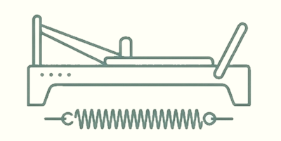

Joanna Wilczak — Prywatne sesje pilatesu w sercu Warszawy. Skupienie na Twoich potrzebach, precyzja ruchu i głębokie wzmocnienie.
Zarezerwuj SesjęKameralna atmosfera i pełne skupienie na Tobie. Każdy ruch ma znaczenie, a trening jest dostosowany do Twoich możliwości.

Głębokie wzmocnienie core, poprawa mobilności i postawy. Trening na maszynach to precyzja, która zmienia ciało.
Z pasją prowadzę studio Pieróg Pilates, łącząc klasyczne zasady metody Josepha Pilatesa z nowoczesnym podejściem do ruchu. Specjalizuję się w treningach personalnych na reformerach, pomagając odnaleźć balans i siłę.